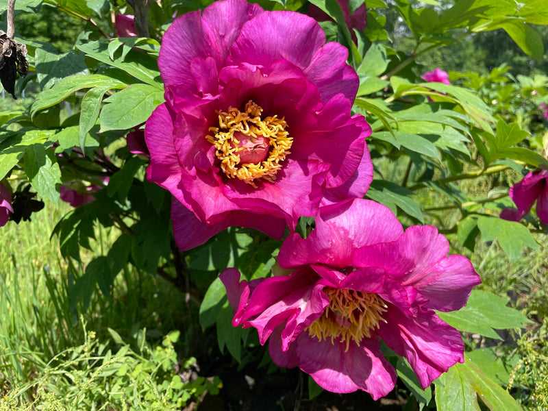
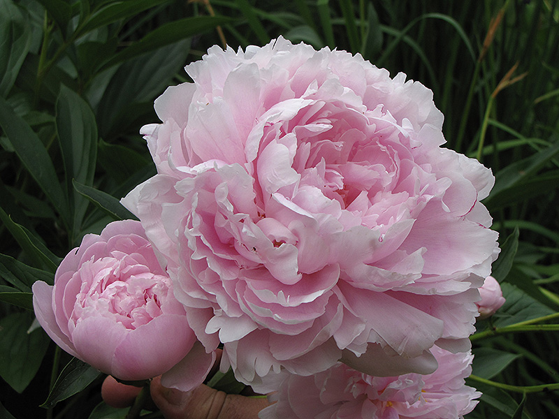
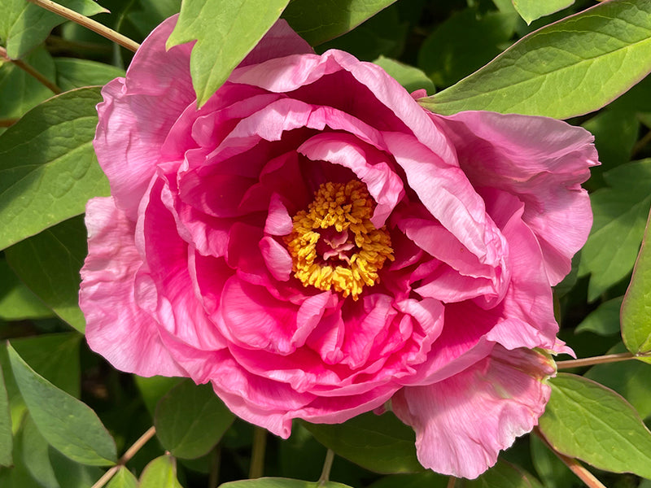
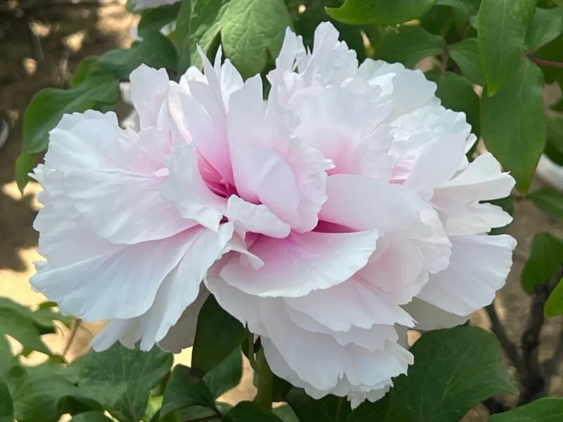

Meaning: Bashfulness
Origin
In ancient Greece, it was said that nymphs could turn themselves into peony flowers to avoid being seen by humans. Bashful creatures by nature, they wished to hide from mortal eyes. Likewise, even in full bloom, peonies’ petals curl inward, protecting their delicate centers.
Gallery



